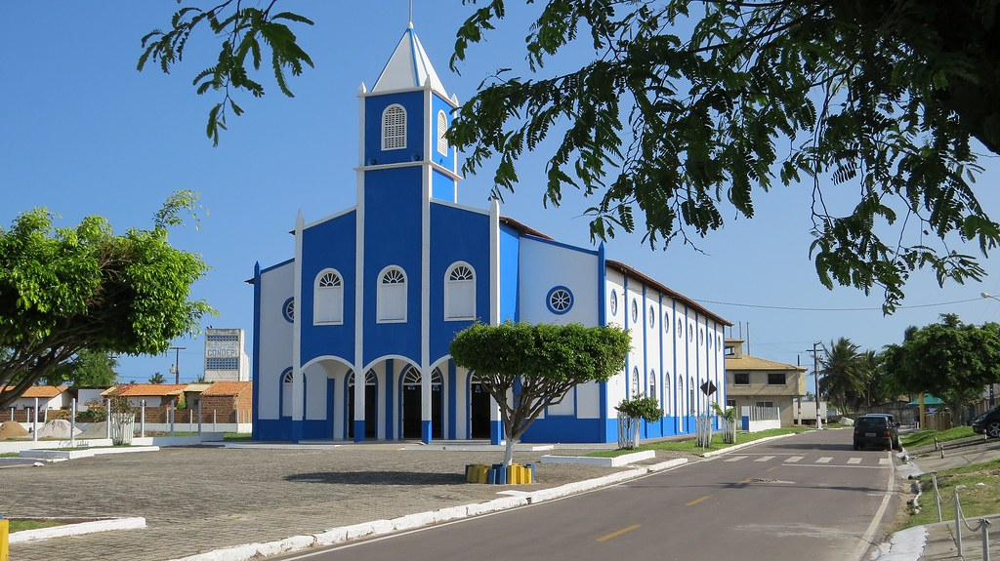

Pirambu
História
Para algumas fontes, a nomenclatura do município vem de um peixe comum na região (o pirambu), para outras vem do nome de um chefe indígena que habitou a antiga povoação.
A povoação chamada inicialmente de “Ilha” passou a ser habitada por pescadores no início do século XX, que praticavam a pesca de subsistência nos rios Pomonga, Japaratuba e no Oceano Atlântico, além da caça e agricultura. O comércio era baseado no escambo e as moradias feitas de palha. Em 1911 foi instalada uma casa comercial e fundada a colônia de pescadores. Em 1912 a povoação passou a condição de vila, onde foi construída a igreja em homenagem a Nossa Senhora de Lourdes. Em 1934 com a emancipação de Japaratuba de Capela, Pirambu subiu à condição de povoado.
Na década de 60 do século XX, um grupo de lideranças locais iniciou um movimento de emancipação política de Pirambu. João Dória do Nascimento, vereador de Japaratuba; Manuel Amaral Lemos, produtor rural; Abelardo do Nascimento e José Lauro Ferreira, pescadores; e Xavier dos Santos encabeçavam o movimento.
Em 26 de novembro de 1963 foi sancionada o projeto de lei apresentado pelo deputado estadual Nivaldo Santos, que elevava o povoado à categoria de município com a denominação de Pirambu, desmembrado de Japaratuba. Com a popularidade, o vereador japaratubense João Dória do Nascimento foi eleito o primeiro prefeito de Pirambu, tomando posse em agosto de 1965.
fonte: https://pt.wikipedia.org/wiki/PirambuPontos Turísticos
Lagoa Azul
Uma lagoa redonda, com 10 metros de profundidade e cercada por uma natureza extremamente preservada. A região faz parte da Reserva Biológica de Santa Isabel, que há mais de 30 anos protege toda a fauna e flora da chamada Costa dos Manguezais de Sergipe, e apesar do nome, possui águas transparentes. Um lugar romântico que atrai muitos turistas para seções fotográficas.
Dados Gerais de acordo com o IBGE
| Prefeito (a) | Guilherme Jullius Zacarias de Melo |
| Vice-Prefeito (a) | Maria Bernadete do Carmo |
| Site do município | https://pirambu.se.gov.br/ |
| Área territorial | 218,084 km² |
| População estimada | 8.369 pessoas |
| Densidade demográfica | 38,4 hab./km² |
| IDHM | 0,603 |
| PIB per capita | R$ 6.037,03 |